직업상담사-1급(구) (2004-09-05 기출문제)
1과목: 고급직업상담·심리학
1. 일을 분류하는 단위를 광의에서 협의의 순으로 나열한 것은?
- 직계 - 직군 - 직렬 - 직무
- 직군 - 직계 - 직무 - 직렬
- 직렬 - 직계 - 직무 - 직군
- 직군 - 직렬 - 직계 - 직무
(정답률: 알수없음)

2. 인간중심적 상담이론에서 보는 인간문제 행동의 원인은?
- 해결하지 못한 무의식적 충동과 갈등
- 잘못 학습된 행동특성
- 자기와 유기체적 경험의 불일치
- 어린시절에 해결하지 못한 좌절경험
(정답률: 알수없음)
3. 다음 중 적극적인 경청과 거리가 먼 것은?
- 내담자로 하여금 생각이나 감정을 자유롭게 표현할 수 있도록 도와준다.
- 내담자가 자신의 문제를 탐색하도록 돕고, 상담에 대한 책임감을 느끼게 한다.
- 상담자가 자신이 내담자의 말을 주목하여 듣고 있음을 전달해 준다.
- 내담자가 말하는 내용의 의미를 파악해서 해석해 준다.
(정답률: 알수없음)
4. 현재 국내 직업상담사들의 주요 업무가 아닌 것은?
- 교육기회의 확대와 새로운 직업의 창출
- 직업관련 심리검사의 실시 및 해석
- 노동법규 관련 직업상담
- 직업정보의 수집, 분석 및 가공
(정답률: 알수없음)
5. 직무와 관련되어 육체적 피로, 수면 방해, 업무에 대한 긍정적 강화 요인의 결여, 무기력감과 무용감, 그리고 직무에 관련된 일에 대한 냉소적 태도 등이 나타나는 스트레스의 일반적 적응 증후군의 단계는?
- 경고단계
- 저항단계
- 소진단계
- 이탈단계
(정답률: 알수없음)
6. 경력개발 프로그램 중 "종업원 개발"에 해당되지 않는 것은?
- 훈련 프로그램
- 직무순환
- 조기발탁제
- 후견인 프로그램
(정답률: 알수없음)
7. 타당도(validity)에 대한 설명으로 옳지 않은 것은?
- 검사의 타당도는 그 검사가 측정하고자 의도하는 속성을 얼마나 정확하게 측정하고 있는가를 말한다.
- 검사가 그 검사를 통해 예측하고자 하는 준거와 어느 정도 관련성이 있는가를 나타내는 것이 준거타당도이다.
- 직업적성, 직무만족 등과 같은 추상적인 개념들을 실제적인 수준에서 관찰 가능한 행동표본으로 얼마나 잘 나타내고 있는가 하는 것이 구성타당도이다.
- 특정의 검사 점수를 가지고 다른 준거점수를 얼마나 잘 예측해 낼 수 있는가 하는 정도가 변별타당도이다.
(정답률: 알수없음)
8. 직무스트레스에 대한 다음 설명 중 옳지 않은 것은?
- 스트레스에 대한 반응은 심리적, 생리적, 행동적 반응으로 나뉜다.
- 조직 생활에서 스트레스의 출처로 감독자와의 관계나 역할 갈등을 역할 속성(role property)적 스트레스라고 할 수 있다.
- 과업내용이 단순-복잡 정도에 따라 스트레스가 유발된다.
- 성격유형으로 볼 때 A형 보다는 B형이 더 스트레스를 많이 받는다.
(정답률: 알수없음)
9. 진로탐색 프로그램에 포함되어야 할 내용이 아닌 것은?
- 희망직업을 알아본다.
- 직업정보를 수집한다.
- 부모님의 가치관을 알아본다.
- 능력과 적성을 알아본다.
(정답률: 알수없음)
10. "직무만족도와 생산성 사이에 정적 상관관계가 있다"에 대한 해석으로 옳은 것은?
- 직무만족이 높으면 생산성도 높다는 의미이다.
- 직무만족은 낮지만 생산성은 높다는 의미이다.
- 직무만족이 높으면 생산성은 낮다는 의미이다.
- 직무만족과 생산성 사이에 상관은 없다는 의미이다.
(정답률: 알수없음)
11. Fraser & Shery(1986)는 직업상담사의 1차적 및 2차적 특성이 직업상담에 중요하게 작용한다고 보았다. 다음 중 1차적 특성에 해당되지 않는 것은?
- 에너지
- 자기이해
- 과학적 지식과 논리
- 창조성
(정답률: 알수없음)
12. 종업원들이 일을 통해 무엇을 얻고자 하는가, 혹은 무엇때문에 열심히 일을 하는가를 설명하는 동기이론들을 욕구이론 혹은 내용이론이라고 부른다. 여기에 해당하지 않는 것은?
- Maslow의 욕구위계이론
- Alderfer의 ERG이론
- Herzberg의 2요인이론
- Locke의 목표설정이론
(정답률: 알수없음)
13. 프로그램 개발 및 평가과정에 대한 설명 중 옳지 않은 것은?
- 새롭게 개발된 프로그램의 효과를 증진시키기 위해 프로그램이 완성되기 전에 실시되는 평가를 형성평가라고 한다.
- 요소연구란 프로그램을 개발, 개선하기 위해 프로그램 내에서 식별 가능한 최소의 내용단위 또는 과정단위나 그 조합의 효과성을 목표에 비추어 검증하는 절차이다.
- 프로그램 개발과정에서 대체로 요구사정이 가장 먼저실시된다.
- 개별 프로그램의 효과를 평가하기 위해서 가장 강력한 연구설계방식은 메타분석방법이다.
(정답률: 알수없음)
14. 21세기에 접어들면서 직무환경의 변화에 따라 직무 내용도 급격하게 변할 것이라는 예상이 나오고 있다. 이러한 변화에 맞추어 직무분석의 형태가 변해야 한다는 전문가(예, Sanchez, 1994)의 주장이 증가하고 있다. 미래의 직무분석에 대한 다음의 예상 중 잘못된 것은?
- 직무분석에 필요한 정보수집의 원천으로서 현직자 뿐아니라 외부 고객이 중요해 질 것이다.
- 기술의 발전으로 직접 면접 대신 전자우편과 같은 방법을 활용함으로써 시간과 비용을 절약할 수 있다.
- 과거에는 직무분석에 포함되지 않았던 과제외 수행이나 조직시민행동 등도 분석 내용으로 포함될 것이다.
- 직무의 내용이 전문화되고 급변하게 되므로 직무분석의 단위가 더 세분화 될 것이다.
(정답률: 알수없음)
15. Holland가 제시한 직업적 성격 유형으로 알맞게 짝지은 것은?
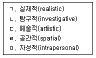
- ㄱ, ㄴ, ㄷ
- ㄱ, ㄴ, ㅁ
- ㄴ, ㄷ, ㄹ
- ㄷ, ㄹ, ㅁ
(정답률: 알수없음)
16. 다음 중 생애진로사정(Life Career Assessment)에 대한 설명이 아닌 것은?
- 내담자에 대한 기초적인 직업상담정보를 얻는 질적 평가절차이다.
- 진로사정, 진로카드 작성, 강점과 장애, 요약의 네부분으로 구성되어 있다.
- 내담자의 가치관과 이를 통한 일관적인 생활방식에 대한 인식을 준다.
- 아들러의 개인주의 심리학에 기반을 두고 있다.
(정답률: 알수없음)
17. 성공적인 집단직업상담 프로그램의 가정이 아닌 것은?
- 직업계획과 의사결정을 위해서 직업에 대한 많은 정보를 집단상담을 통해서 얻을 수 있다.
- 올바른 결정을 위해서 자신(예 : 적성, 흥미, 가치관)에 관한 정확한 정보를 집단에서 얻을 수 있다.
- 타인들로부터의 객관적이고 다양한 피드백과 상호작용을 위해 집단구성원은 많을수록 좋다.
- 집단직업상담의 절차는 자신의 주관적인 측면들에 대해 탐색하고 여러 역할을 시도해 볼 수 있는 기회를 제공한다.
(정답률: 알수없음)
18. 직무만족을 유발하는 요인과 불만족을 유발하는 요인은 크게 다르며, 그것들은 일차원적인 양립관계에 있지 않다고 하는 이론은?
- Maslow의 욕구이론
- Alderfer의 ERG이론
- Porter & Lawler의 공평이론
- Herzberg의 2요인이론
(정답률: 알수없음)
19. 상담에서의 질문에 대한 설명으로 틀린 것은?
- 질문은 구체적으로 한다.
- "왜"라는 질문은 가능한 피한다.
- 질문이 필요할 때는 폐쇄질문이 효과적이다.
- 이중질문은 피한다.
(정답률: 알수없음)
20. 심리검사 제작과정에서, 탐색적 요인분석방법인 주성분분석과 주축요인분석이 자주 사용된다. 요인추출 기준에 대한 다음 설명 중 옳은 것은?
- 주축요인 분석에서 요인추출기준은 고유값 1.0 이상이다.
- 문항수가 적을 때는 주축요인분석보다 주성분분석이 더 적절하다.
- 주성분분석에서 요인의 해석 가능성은 요인추출의 가장 중요한 기준이 된다.
- 주축요인분석에서 요인수를 미리 정하는 것이 바람직하다.
(정답률: 알수없음)
21. 과소보상(적은 보상)으로 인해 직장에서 불공평을 느낀 종업원이 공평감(공평한 느낌)을 회복하기 위해 사용하는 방법으로서 Adams가 제시하는 것이 아닌 것은?
- 열심히 일하지 않는다.
- 다른 직장으로 옮긴다.
- 동료보다 더 많은 공헌을 하려고 한다.
- 임금이나 대우를 개선하도록 회사측에 요구한다.
(정답률: 알수없음)
22. 다음과 같은 진로발달에 관한 수퍼(Super)의 설명은 어떤 단계에 해당하는가?
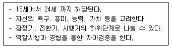
- 유지기
- 확립기
- 성장기
- 탐색기
(정답률: 알수없음)
23. 홀랜드 이론과 관련된 세부 논의들 중 올바른 것은?
- RI형은 RS형보다 일관성이 높다고 볼 수 있다.
- 실제적 유형에 속하는 대표적인 직업은 기업경영인, 정치가 등이다.
- 사회적 유형에 속하는 대표적인 직업은 공인회계사, 경제분석가, 세무사 등이다.
- 여섯 유형에서의 점수가 비슷한 경우 진로정체성이 뚜렷한 것으로 해석한다.
(정답률: 알수없음)
24. 한국교육개발원(1991)이 개발한 『진로성숙도 검사』는 태도영역과 능력영역으로 구분하여 측정하고 있다. 다음 중 능력 영역의 측정내용으로 옳은 것은?
- 직업선택능력, 자기탐색능력, 의사결정 능력
- 직업세계 이해능력, 사회적 관계 능력, 자기 탐색 능력
- 직업세계 이해능력, 직업선택능력, 합리적 의사결정 능력
- 직업선택 능력, 사회적 관계 능력, 독립성 능력
(정답률: 알수없음)
25. 직업훈련이 업무 이해능력에 미치는 효과를 알아보기 위하여 훈련전과 훈련후에 동일한 측정도구를 사용하여 피훈련자의 직무에 대한 이해 수준을 측정하였다. 분석결과 훈련후 측정치의 점수가 더 높게 나왔으므로 연구자는 그 직업훈련이 효과가 있다는 결론을 내렸다. 이 사례에 대하여 다른 학자들은 측정도구에 대한 노출이 가외변수로 작용한다고 비판하였다. 다음 중 가외변수를 통제하여야 한다는 지침과 가장 일치하는 용어는?
- 검사-재검사 신뢰도
- 내적일치도
- 내적 타당도
- 외적타당도
(정답률: 알수없음)
26. 직업부적응에 대한 일반적인 행동준거라고 볼 수 없는 것은?
- 지각 및 결근
- 소진(Burnout)
- 직무참여
- 이직(離職)
(정답률: 알수없음)
27. Tiedeman의 진로발달이론과 관련이 없는 설명은?
- 자아정체감이 발달할 때 진로에 적합한 의사 결정 능력도 개발된다.
- 자기발달에 역점을 두면서 개인의 전체적인 인지발달과 의사결정을 강조한다.
- 어떤 직업의 계속된 수용이나 거부 등으로 자신의 의사를 분명히 표현하는 것이 직업선택에서 중요하다.
- 생애진로 이론을 지지한다.
(정답률: 알수없음)
28. 발달적 직업상담에서 수퍼(Super)는 세가지 방면에서 내담자를 평가하였다. 이에 해당되지 않는 것은?
- 문제 평가
- 환경 평가
- 예언적 평가
- 개인적 평가
(정답률: 알수없음)
29. 편향(치우침)을 피하기 위해 피평가자의 수행을 강제적으로 비교하는 수행평가방법이 아닌 것은?
- 가중 체크리스트(Weighted checklist)
- 대안 서열법(Alternation Ranking)
- 쌍비교법(Paired comparison)
- 강제 배분법(Forced distribution)
(정답률: 알수없음)
30. 다음 특징은 어떤 진로상담 이론을 기술한 것인가?
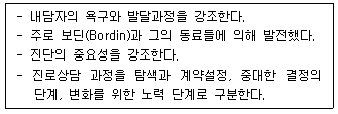
- 특성요인 진로상담
- 인간중심 진로상담
- 정신분석적 진로상담
- 행동주의 진로상담
(정답률: 알수없음)
31. 직업상담의 일반적인 기능에 대한 설명으로 틀린 것은?
- 내담자가 이미 잠정적으로 선택한 진로에 대한 의사 결정에 도움을 줄 수 있다.
- 내담자 가족이 갖고 있는 직업선호도의 중요성을 내담자가 깨닫도록 해줄 수 있다.
- 내담자로 하여금 직업목적을 명료하게 할 수 있다.
- 내담자가 자기 자신과 직업세계에 대해 알지 못했던 사실을 발견하도록 도와줄 수 있다.
(정답률: 알수없음)
32. 내담자 중심 상담접근에서 표준화 검사의 용도로 가장 적절한 것은?
- 내담자의 자기 명료화를 위하여
- 진단적 정보로 활용하기 위하여
- 내담자를 객관적으로 이해하기 위하여
- 내담자를 설득하는 자료를 얻기 위하여
(정답률: 알수없음)
33. 내담자가 어렸을 때 자기의 부모나 주요한 타인에게 품었던 생각이나 감정을 상담장면에서 상담자에게 반복하는 현상은?
- 저항
- 해석
- 투사
- 전이
(정답률: 알수없음)
34. 다음 중 직업심리검사의 종류와 사용대상이 잘못 짝지워진 것은?
- 노동부 구직욕구진단검사 - 만18세이상 구직자
- 국방부 군 인성검사 - 군입대자
- 노동부 일반직업적성검사 - 초등학생이상
- 노동부 직업흥미 검사 - 중고생
(정답률: 알수없음)
35. 직업 발달이론에서 중요하게 고려되는 자기효능감을 10점 만점으로 구성된 3개 문항으로 측정한 다음 이를 통합하여 표준점수(Z)로 전환하였다. 전환된 자기효능감의 평균은?
- 0
- 5
- 10
- 15
(정답률: 알수없음)
36. 직무수행평가에서 행동기준 평정척도에 대한 설명 중 옳지 않은 것은?
- 중대사건법과 평정척도법을 혼합한 것이다.
- 수행은 척도상에 평정되지만 척도점들에 행동적 사건들이 제시되어 있다.
- 평가자는 일정기간 동안 종업원을 관찰하고, 중대사건의 빈도를 평정한다.
- 중요사건들이 해당 차원에서 얼마나 효과적인지를 척도상에 평정한다.
(정답률: 알수없음)
37. 직업상담사가 장애를 가진 사람들을 만날 때 이해해야 되는 것이 아닌 것은?
- 교육적인 장애의 배경
- 일에 대한 경험 및 사회적 경험의 제약
- 가족배경
- 고정적인 직업관
(정답률: 알수없음)
38. 형태주의 상담은 "발달초기의 문제"를 중요하게 생각한다는 점에서 정신분석적 상담과 유사하나, 다음과 같은 점에서 차이가 있다. 그것이 무엇인가?
- 현재상황에 대한 자각
- 무의식 갈등 이해
- 본능에 대한 인식
- 개인행동의 이유 분석
(정답률: 알수없음)
39. 검사점수가 시간의 변화가 있더라도 일관적인가를 나타내는 신뢰도(reliability) 계수는?
- 검사-재검사 신뢰도
- 동형검사 신뢰도
- 반분 신뢰도
- 채점자간 신뢰도
(정답률: 알수없음)
40. 한 연구보고서에서 인성검사 점수와 직업적성 검사의 상관계수가 1.01으로 제시되었다. 이에 대한 가장 적절한 설명은?
- 인성과 직업적성 간에는 인과적 관계를 추정할 수 있다.
- 직업적성과 인성 간에는 매우 높은 상관이 있다.
- 상관계수가 잘못 계산되었으므로 인성과 직업적성의 관련성을 알 수 없다.
- 상관계수가 0.01인 경우보다 인성과 직업적성의 관련성이 100배가 높다.
(정답률: 알수없음)
2과목: 고급직업정보론(노동시장론 포함)
41. 다음은 경제활동인구에 대한 통계이다. 취업자 가운데 구직활동을 하는 사람이 전체의 1%라면 전체 구직활동자의 규모는? (단, 광공업, 농림어업 종사자는 구직활동을 전혀하지 않는다고 봄.)
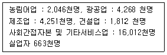
- 884천명
- 823천명
- 221천명
- 160천명
(정답률: 알수없음)
42. 기업이 아직 정년이 되지 않은 장기근속자의 자진 퇴사를유도하기 위해 정년전에 퇴사할 경우 상당한 액수의 명예 퇴직금을 지불하기로 결정하였다. 그 효과에 대한 다음의 설명 중 맞는 것은?
- 생산성이 낮은 근로자들이 주로 퇴사한다.
- 생산성이 높은 근로자들이 주로 퇴사한다.
- 생산성과 무관하게 골고루 퇴직한다.
- 알 수 없다.
(정답률: 알수없음)
43. 다음 중 노동수요의 탄력성 결정요인은?
- 노동자에 의해 생산된 상품의 공급탄력성
- 총수입중에서 차지하는 노동비용의 비율
- 다른 생산요소로의 노동의 결합가능성
- 노동이외의 다른 생산요소의 공급탄력성
(정답률: 알수없음)
44. 한국산업인력공단 중앙고용정보원의 『정보기술직업전망』의 직무분석 내용이다. 이에 해당되는 직업은?
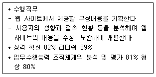
- 웹 엔지니어
- 웹 디자이너
- 웹 프로듀서
- 웹 프로그래머
(정답률: 알수없음)
45. 아담 스미스(Adam Smith)가 국부론에서 직업을 식별하는 다섯 가지 기준으로 제시한 것과 거리가 먼 것은?
- 업무 수행의 자율성/타율성
- 직업수행자에게 요구되는 책임의 크기
- 직업기술 습득의 어려움과 비용의 많고/적음
- 직업의 쾌적함/불유쾌함
(정답률: 알수없음)
46. 노동조합의 목표가 조합원의 임금인상과 고용안정이라면, 노동조합의 임금인상 효과가 가장 큰 경우는?
- 노동수요가 비탄력적인 경우
- 노동수요가 탄력적인 경우
- 노동수요가 단위탄력적인 경우
- 노동수요곡선이 수평선인 경우
(정답률: 알수없음)
47. 다음 표는 경쟁적인 생산물시장과 노동시장하에서 조업하는 어느 가상기업의 단기생산함수를 보인 것이다. 임금이 12,000원, 생산물의 가격이 2,000원이라면 이 기업은 몇 명의 근로자를 고용하려 하겠는가?
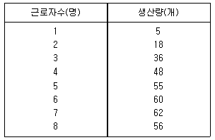
- 3명
- 4명
- 5명
- 6명
(정답률: 알수없음)
48. 우리나라 직업정보 제공 체계의 문제점과 가장 거리가 먼 것은?
- 직업정보 제공대상자의 특성에 맞는 직업정보 생산이 미비하다.
- 미국의 O*NET과 같은 직업정보시스템 개발이 이루어지고 있지 않다.
- 직업정보 가치에 대한 홍보가 미흡한 편이다.
- 직업정보원의 관리가 소홀하다.
(정답률: 알수없음)
49. 전문직의 형성과정을 역사적으로 분석해보면 유사한 단계를 거쳐 발전해 왔음을 알 수 있다. 이와 관련 다음 중 위렌스키(Wilensky)가 제기한 전문직의 발전 단계로 올바른 것은?
- 전일제 직업화 → 전문가협회 설립 → 대학 설립 → 국가 면허 → 직업윤리 규정 마련
- 전일제 직업화 → 대학 설립 → 국가 면허 → 전문가협회 설립 → 직업윤리 규정 마련
- 전일제 직업화 → 대학 설립 → 전문가협회 설립 → 국가 면허 → 직업윤리 규정 마련
- 전일제 직업화 → 국가 면허 → 대학 설립 → 전문가협회 설립 → 직업윤리 규정 마련
(정답률: 알수없음)
50. 우리나라 자격제도에 대한 설명 중 맞는 것은?
- 자격제도는 교육시장과 노동시장을 연계하는 주요한 신호기제이다.
- 민간자격의 국가공인의 심사· 조사를 주관하는 기관은 한국노동연구원이다.
- 우리나라는 기업내 사내자격이 활성화 되어있다.
- 정부는 자격촉진법의 제정을 통하여 민간자격의 활성화를 도모하고 있다.
(정답률: 알수없음)
51. 다음 표는 외환위기를 전후한 수년간의 경제활동참가율 및 실업률을 보인 것이다. 외환위기 직후의 노동시장사정을 올바르게 추론한 것은?
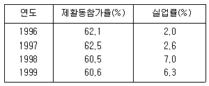
- 경제활동참가율의 하락은 부가노동자효과를 반영하는 것이다.
- 경제활동참가율의 하락은 실망노동자효과를 반영하는 것이다.
- 실업률의 증가는 대부분 잠재실업에 기인한 것이다.
- 실업률의 증가는 대부분 마찰적 실업에 기인한 것이다.
(정답률: 알수없음)
52. 경제성장률이 5%, 물가상승률이 3%, 명목임금 상승률이 10%이면, 실질임금 상승률은?
- 3%
- 5%
- 7%
- 8%
(정답률: 알수없음)
53. 다음은 직업훈련제도에 관한 설명으로 틀린 것은?
- 직업훈련법은 1967년 제정되었으며, 산업화에 필요한 기능인력의 양성· 공급을 통하여 경제개발에 견인차 역할을 수행하였다.
- 1976년에 제정· 시행된 직업훈련기본법은 직업훈련자율제를 근간으로 한다.
- 고용보험에 의한 직업능력개발사업은 1995년 7월에 도입되었다.
- 1999년에 제정된 근로자 훈련촉진법으로 민간의 훈련참여가 대폭 확대되었다.
(정답률: 알수없음)
54. 노동자에게 지급되는 임금과 어떤 직무특성간의 관계를 요약한 헤도닉임금함수(hedonic wage function)에 대한 설명으로 옳지 않은 것은?
- 헤도닉임금함수의 기울기는 근로자의 유보임금(reservation wage)과 같다.
- 헤도닉임금함수의 기울기는 기업의 등이윤곡선(iso-profit curve)의 기울기와 같다.
- 직무특성이 바람직하지 않은 것이라면 헤도닉임금함수의 기울기는 음(-)이 된다.
- 근로자들의 직무특성에 대한 숨겨진 선호가 헤도닉 임금함수를 통해 노출된다.
(정답률: 알수없음)
55. 고용정보 워크넷(Work-net)에서 제공하는 메뉴(서비스)가 아닌 것은?
- 창업진단검사 실시
- 실업인정 신청
- 직업전환 프로그램
- 직장체험업체 정보
(정답률: 알수없음)
56. 다음은 2002년과 2⑤0년에 예상되는 우리나라 인구구조와 관련된 인원수가 제시되어 있다. 이를 토대로 각 년도의 노령화지수가 맞는 것은?
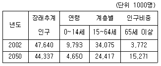
- 2002 = 38.5, 2⑤0 = 328.4
- 2002 = 7.92, 2⑤0 = 34.44
- 2002 = 11.1, 2⑤0 = 62.5
- 2002 = 259.6, 2⑤0 = 30.4
(정답률: 알수없음)
57. 다음 중 직업현황 및 고용구조를 가장 자세히 파악할 수 있는 조사자료는?
- 고용구조특별조사
- 사업체기초통계조사
- 경제활동인구조사
- 산업· 직업별 고용구조조사
(정답률: 알수없음)
58. 완전경쟁시장하에서, 노동의 한계생산물가치가 VMP=5N 으로 주어져 있고, 노동의 시장 임금률이 W=50으로 주어져 있다면, 이윤극대화를 추구하는 기업의 균형고용량(N)은 얼마나 되겠는가?
- 5
- 10
- 15
- 20
(정답률: 알수없음)
59. 다음 자료에서 여성의 경제활동참가율은?
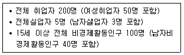
- (50/300)× 100
- (50/200)× 100
- (52/112)× 100
- (50/112)× 100
(정답률: 알수없음)
60. 우리나라의 임금체계에 관한 설명으로 옳지 않은 것은?
- 명목임금은 정액급여, 초과급여, 특별급여로 구성된다.
- 통상임금에 포함되는 임금은 기본급과 통상적 수당이다.
- 통상임금은 퇴직금, 휴업수당, 산재보상 등의 산출기준임금이다.
- 평균임금은 고용기간 중 근로자가 지급받고 있던 평균적인 임금수준을 말한다.
(정답률: 알수없음)
61. 한국표준산업분류(2000)에서 산업분류기준으로 옳지 않은 것은?
- 산출물의 특성
- 투입물의 특성
- 생산활동의 일반적인 결합형태
- 소비활동의 일반적인 형태
(정답률: 알수없음)
62. 어떤 훈련프로그램을 수료하면 기업이 1년후에 330만원을 보너스로 준다고 한다. 단 이 훈련을 받는데에는 수강료 200만원과 50시간의 참여가 필요하다. 훈련에 참가하는 시간동안은 임금을 받지 못한다. 현재의 임금율이 시간당 2만원이라면 이 프로그램의 내부수익율(internal rate of return)은?
- 5%
- 10%
- 12%
- 15%
(정답률: 알수없음)
63. 직무급에 관한 설명 중 틀린 것은?
- 신분이나 개인의 속성에 예속된 임금결정 방식이 아니라 직무에 의한 임금결정방식이다.
- 동일가치의 직무에는 동일한 임금이라고 하는 원칙을 명확히 함으로써 임금배분의 공평성을 기할 수 있는 방식이다.
- 생활급과는 차이가 있기 때문에 경영의 합리화, 근로 의욕의 제고, 노동생산성의 향상을 기할 수 있는 임금결정방식이다.
- 임금격차는 직무간의 격차에 의한 것이므로, 노동의 양과 질을 평가하는 임금결정방식은 아니다.
(정답률: 알수없음)
64. 시장 균형임금보다 높은 수준으로 설정되는 최저임금이 일부 특정 노동시장에만 적용될 경우 그 결과에 대한 설 명으로 옳지 않은 것은?
- 최저임금제가 적용되는 부문에서 고용이 감소한다.
- 최저임금제가 적용되지 않는 부문의 임금이 감소하고 고용이 증대된다.
- 경제 전체적으로는 고용이 증대된다.
- 최저임금제가 적용되지 않는 부문의 노동수요곡선에 는 변화가 없다.
(정답률: 알수없음)
65. 대다수 한국기업이 채택하고 있는 속인적 임금체계에 대한 설명으로 맞는 것은?
- 단순히 근로시간을 기준으로 임금을 정하는 것
- 일의 결과를 기준으로 임금을 정하는 제도
- 일의 특성을 기준으로 임금을 정하는 제도
- 연령, 성, 근속연수 등을 기준으로 임금을 정하는 제도
(정답률: 알수없음)
66. 노동에 대한 수요가 파생수요(derived demand)라는 의미는?
- 노동수요는 노동공급에 의해 유발된다.
- 노동수요함수가 기업의 총수입함수의 1차도함수이다.
- 노동수요는 생산물수요에 의해 유발된다.
- 노동수요는 자본에 의해 유발된다.
(정답률: 알수없음)
67. 다음 직업능개발 훈련 중 분류기준이 다른 것은?
- 집체훈련
- 양성훈련
- 향상훈련
- 전직훈련
(정답률: 알수없음)
68. 일급제나 이익분배제 등의 결함을 시정하기 위해 시간급 임금과 생산고임금을 절충한 임금형태는?
- 토웬제(Towen's gain-sharing plan)
- 로완제(Rowan Premium plan)
- 테일러제(Taylor's scientific system)
- 할시제(Halsey premium plan)
(정답률: 알수없음)
69. 한국표준산업분류(2000)에 대한 설명으로 틀린 것은?
- 한국표준산업분류는 사업체가 주로 수행하는 산업활동의 유사성에 따라 체계적으로 유형화 한 것이다.
- 현행 산업분류는 ILO의 세계표준산업분류를 기초로 작성되었다.
- 한국표준산업분류는 산업관련 통계자료의 정확성, 비교성을 확보하기 위해서 작성된 것이다.
- 현행 한국표준산업분류는 2000년 제8차 개정 고시되었다.
(정답률: 알수없음)
70. 다음 중 노동조합이 노동자의 이직률을 감소시킴으로서 생산성을 증대시키는 효과는?
- 이전효과(spillover effect)
- 집단발언효과(collective voice effect)
- 위협효과(threat effect)
- 대기실업효과(wait unemployment effect)
(정답률: 알수없음)
71. 효율임금이론에 대한 설명으로 옳지 않은 것은?
- 다른 기업보다 효율적으로 임금을 낮춘다.
- 노동시장의 정보가 불완전하다고 가정한다.
- 효율임금은 대기업에서 사용될 가능성이 높다.
- 기업은 이윤극대화를 위해 이러한 임금정책을 사용한다.
(정답률: 알수없음)
72. 한국직업사전(2003)에서 다음의 직무를 수행하는 직업명은?
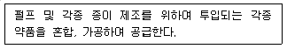
- 조약원
- 증해기조작원
- 초지기조작원
- 교반기조작원
(정답률: 알수없음)
73. 자연실업률이 4%로 알려져 있는데, 현재의 실업률은 3% 수준에 머무르고 있다. 어떤 상황인가?
- 경기적 실업이 존재한다.
- 물가의 상승이 예견된다.
- 부가노동자효과가 나타나고 있다.
- 잠재실업이 존재한다.
(정답률: 알수없음)
74. 연공급 임금체계의 장단점에 관한 설명 중 틀린 것은?
- 배치전환 등 인력관리의 융통성 결여
- 전문기술인력의 확보 곤란
- 근로자의 기업에 대한 귀속의식 고양
- 동일노동 동일임금의 원칙 실현 곤란
(정답률: 알수없음)
75. 한 사람이 전혀 상관이 없는 두 가지 이상의 직업에 종사하고 있을 경우 그 직업을 결정하는 일반적 원칙을 나열한 것이다. 그 우선순위를 올바르게 선정하여 나열한 것은?
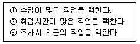
- ① - ② - ③
- ② - ① - ③
- ③ - ② - ①
- ② - ③ - ①
(정답률: 알수없음)
76. 한국직업사전(2003)에서 직무기능에 대한 설명으로 옳지 않은 것은?
- 직무기능은 해당 직업 종사자가 직무를 수행하는 과정에서 자료, 사람, 사물과 맺는 관련된 특성을 나타낸다.
- 자료와 관련된 기능은 정보, 지식, 개념 등 세가지 종류의 활동으로 배열되어 있다.
- 사람과 관련된 기능은 위계적 관계가 많다.
- 사물기능은 작업자가 기계와 장비를 가지고 작업하는지 혹은 기계와 관련 없는 도구와 작업보조구를 가지고 작업하는지 기초하여 분류한다.
(정답률: 알수없음)
77. 다음 중 직업훈련과정의 종류가 다른 것은?
- 재직자훈련
- 정부위탁훈련
- 고용촉진훈련
- 여성가장훈련
(정답률: 알수없음)
78. 데이컴법(DACUM method)의 전제 조건으로 옳지 않은 것은?
- 전문적인 기술자는 그 누구보다도 그 직무를 잘 기술 할 수 있다.
- 한가지 직무는 해당직업에 종사하고 있는 숙련된 사람이 수행하는 작업명칭들로 충분히 기술될 수 있다.
- 모든 작업에는 그 작업을 올바르게 수행하는데 필요한 관계지식과 태도가 있다.
- 모든 작업은 의식의 흐름, 감각적인 내용 등 내부구조를 파악하는 것이 중요하다.
(정답률: 알수없음)
79. 다음 중 훈련정보망(HRD-Net)이 추구하는 목표로 가장 거리가 먼 것은?
- 직업훈련기관에 대한 홍보
- 직업훈련관련 행정의 전산화를 통한 효율성 및 편의성 제고
- 직업능력개발 관련 종합 DB구축을 통한 정책의 과학화 달성
- 직업능력개발에 관한 수요자의 다양한 요구를 반영하는 종합직업훈련정보망 기능수행
(정답률: 알수없음)
80. 지식기반경제(Knowledge-based Economy)에서 나타나는 특징이라고 볼 수 없는 것은?
- 다품종 소량생산
- 대립적 노사관계
- 기업내 의사결정과정의 분권화
- 숙련노동자의 다능공화
(정답률: 알수없음)
3과목: 노동관계법규
81. 한국장애인고용촉진공단(이하 "공단" 이라한다) 과 관련한 설명 중 옳지 않은 것은?
- 장애인이 직업생활을 통하여 자립할 수 있도록 지원하고 장애인의 고용촉진 및 직업재활업무를 효율적으로 수행하게 하기 위하여 공단을 설립하였다.
- 공단의 사업을 효율적으로 수행하기 위하여 노동부장관의 승인을 얻어 사회복지사업법에 의한 사회복지법인 기타 비영리법인이 운영하는 장애인복지 단체 등에 그 업무의 일부를 위탁할 수 있다.
- 공단은 장애인 직업생활상담원등 전문요원의 양성,연수 사업등을 수행한다.
- 공단에 이사장1인을 포함한 10인 이상 15인 이하의 이사를 두며 이사장을 포함한 이사 3명은 상근으로한다. 또한 전체 이사 중 3분의1 이상은 장애인으로하여야 한다.
(정답률: 알수없음)
82. 고용보험법에서 구직급여 수급자격자에 대한 설명 중 옳지 않은 것은?
- 근로의 의사와 능력을 가지고 있음에도 취업하지 못한 상태에 있음
- 자기의 중대한 귀책사유로 해고되거나 정당한 사유없는 자기 사정으로 이직하지 않았음
- 실직전 기준기간동안에 고용보험이 적용되는 사업장에서 근무한 기간이 통산하여 180일 이상임
- 수급자격을 인정 받은 후 취업했다가 다시 실업하게 되었으나 새로이 보험단위 기간은 충족하지 아니한 상태임
(정답률: 알수없음)
83. 고용보험법상 근로자가 받을 수 없는 것은?
- 이주비
- 광역구직활동비
- 직업능력개발수당
- 고용유지지원금
(정답률: 알수없음)
84. 직업안정법상 국내근로자공급사업의 허가를 받을 수 있는 자는?
- 노동조합및노동관계조정법에 의한 노동조합
- 국내에서 제조업을 행하고 있는 사업주
- 국내에서 용역업을 행하고 있는 사업주
- 국내에서 서비스업을 행하고 있는 사업주
(정답률: 알수없음)
85. 근로자직업훈련촉진법상 직업능력개발훈련의 기본원칙이 아닌 것은?
- 산업사회와 학교교육과 밀접한 관련하에 실시
- 기업 등 민간의 자율과 창의성 존중원칙과 직업능력 개발훈련이 필요한 근로자의 균등기회보장
- 근로자의 희망· 적성· 능력과 직업종사 전기간에 걸쳐 단계적· 체계적 실시
- 고령자· 장애인· 국가유공자· 군인· 청소년· 여성근로자와 대기업 및 제조업의 생산직 근로자 등의 직업능력개발훈련을 중시
(정답률: 알수없음)
86. 파견근로자보호등에관한법률에 의한 파견기간에 관한 설명 중 틀린 것은?
- 상시적으로 파견이 허용되는 업무의 근로자파견의 기간은 1년을 초과하지 못한다. 다만, 1회에 한하여 1년의 범위안에서 그 기간을 연장할 수 있다.
- 일시적으로 인력을 확보할 필요가 있는 경우 근로자 파견의 기간은 3월을 초과하지 못한다. 다만, 1회에 한하여 3월의 범위안에서 그 기간을 연장할 수 있다.
- 사용사업주가 2년을 초과하여 계속적으로 파견근로자를 사용하는 경우에는 2년의 기간이 만료된 날의 다음날부터 파견근로자를 기간의 정함이 없는 근로자로 고용하여야 한다.
- 출산· 질병· 부상 등 그 사유가 객관적으로 명백한 경우 근로자 파견의 기간은 그 사유의 해소에 필요한 기간이다.
(정답률: 알수없음)
87. 다음 중 고용보험법령상 고용안정사업의 실시에 있어서 우선적으로 고려하여야 하는 기업의 범위로 틀린 것은?
- 상시근로자 300인 이하의 광업 기업
- 상시근로자 300인 이하의 제조업 기업
- 상시근로자 300인 이하의 건설업 기업
- 상시근로자 300인 이하의 통신업 기업
(정답률: 알수없음)
88. 고령자고용촉진법상 과태료 처분에 불복이 있는 자는 그 처분의 고지를 받은 날부터 몇 일 이내에 노동부장관에게 이의를 제기할 수 있는가?
- 10
- 20
- 30
- 40
(정답률: 알수없음)
89. 구인자· 구직자가 직업안정기관에 구인· 구직신청을 하고 자 할 때 제출하는 구인표 또는 구직표와 관련하여 올바른 것은?
- 직업안정기관에 수리된 구인신청의 유효기간은 3월로 한다.
- 직업안정기관에 수리된 구직신청의 유효기간은 2월로 한다.
- 국외취업희망자의 구직신청의 유효기간은 6월로 한다.
- 직업안정기관의 장은 접수된 구인표· 구직표를 2년간 관리· 보관하여야 한다.
(정답률: 알수없음)
90. 다음 중 육아휴직급여의 지급요건에 대한 설명으로 틀린 것은?
- 육아휴직개시일 이전에 고용보험 피보험단위기간이 통산 180일 이상일 것
- 동일한 자녀에 대해서 피보험자인 배우자가 육아휴직(30일 미만은 제외)을 부여받지 않고 있을 것
- 육아휴직개시일 이후 1월부터 종료일 이후 1년 이내에 신청할 것
- 배우자의 질병· 부상으로 신청할 수 없었던 자는 사유 종료후 30일 이내에 신청할 것
(정답률: 알수없음)
91. 직업안정법상 직업소개사업을 겸할 수 있는 업종은?
- 식품접객업
- 영화제작업
- 결혼상담업
- 숙박업
(정답률: 알수없음)
92. 다음 중 근로기준법상의 근로자로 보기 가장 어려운 경우는?
- 개인 질병으로 휴직중인 자
- 부당노동행위를 이유로 해고의 효력을 다투는 자
- 노동조합 업무만을 전담하는 기업별 노조의 전임간부
- 업무상 재해로 요양중인 불법체류 외국인
(정답률: 알수없음)
93. 직장규율을 위반한 근로자에 대한 제재로서 감급을 하는 경우, 감급의 제한에 위반되지 않는 것은?
- 1회의 위반에 대한 감급액이 평균임금의 1일분의 2분의 1을 초과하거나 1임금지급기의 임금총액의 10분의 1을 초과하는 경우
- 여러번의 위반이 1임금지급기에 발생한 경우 위반행위에 대한 각각의 합계액이 1임금지급기의 임금총액의 10분의 1을 초과하는 경우
- 1회의 위반에 대해 수개월에 걸쳐 나누어 감급을 하는 경우 그 감급액을 합한 금액이 1임금지급기의 임금총액의 10분의 1을 초과하는 경우
- 1회의 위반에 대한 감급액이 평균임금의 1일분의 10분의 1을 초과하였으나 2분의 1을 초과하지 않은 경우
(정답률: 알수없음)
94. 장애인고용촉진및직업재활법상 국가 및 지방자치단체의 장은 원칙적으로 장애인을 소속공무원 정원의 얼마이상 고용해야 하는가?
- 100분의 1이상
- 100분의 2이상
- 100분의 3이상
- 100분의 4이상
(정답률: 알수없음)
95. 고용보험법상 산전후휴가급여에 대한 설명 중 틀린 것은?
- 산전후휴가종료일 이전에 피보험단위기간이 통산하여 180일 이상일 것
- 원칙적으로 산전후휴가종료일로부터 6월 이내에 신청할 것
- 산전후휴가기간 중 60일을 초과하는 일수에 대하여 근로기준법상 평균임금에 상당하는 금액을 지급한다.
- 산전후휴가급여의 지급금액은 대통령령이 정하는 바에 따라 그 상한액과 하한액을 정할 수 있다.
(정답률: 알수없음)
96. 고령자고용촉진법 내용에 대한 설명 중 옳지 않은 것은?
- 사업주가 근로자의 정년을 정하는 경우 그 정년이 60세 이상이 되도록 노력하여야 한다.
- 사업주가 기준 고용률을 초과하여 고령자를 추가로 고용하는 경우에는 조세특례제한법이 정하는 바에 따라 조세를 감면한다.
- 사업주는 고령자인 정년퇴직자를 재고용함에 있어 퇴직금과 연차유급휴가일수 계산을 위한 계속 근로기간 산정에 있어 종전의 근로기간을 제외할 수 없다.
- 노동부 장관은 고령자의 고용촉진을 위하여 필요하다고 인정하는 때에는 사업주에게 고령자고용촉진법 시행에 필요한 사항을 보고하게 할 수 있다.
(정답률: 알수없음)
97. 근로자공급사업을 하는 자는 사업계획서· 근로자명부· 근로자공급대장 등 장부 및 서류를 몇년간 비치하여야 하는가?
- 1년
- 2년
- 3년
- 4년
(정답률: 알수없음)
98. 남녀고용평등법의 내용에 대한 설명 중 옳지 않은 것은?
- 근로자 모집, 채용과정에서의 남녀차별은 남녀고용평등법 위반은 당연하고 근로기준법상의 균등처우 조항에도 저촉된다.
- 여성근로자를 모집, 채용함에 있어서 직무수행에 필요로 하지 않는 용모, 키, 체중 등의 신체조건을 제시하여서는 아니 된다.
- 직장내 성희롱이라 함은 사업주, 상급자 또는 근로자가 직장내의 지위를 이용하거나, 업무와 관련하여 다른 근로자에게 성적인 언동 등으로 혐오감 등을 느끼게 하는 것 등을 말한다.
- 육아휴직을 신청할 수 있는 근로자는 생후1년 미만의 영아를 가진 근로자이다.
(정답률: 알수없음)
99. 직업안정법에서 직업소개 관련 내용 중 옳지 않은 것은?
- 직업안정기관의 장은 구직자에 대하여서는 그 능력에 적합한 직업을 소개하도록 노력하여야 한다.
- 직업안정기관의 장은 구인자 또는 구직자 어느 한쪽의 이익에 치우치지 아니하여야 한다.
- 직업안정기관의 장은 구직자에 대하여 반드시 통근할수 있는 지역 안에서 직업을 소개하여야 한다.
- 직업안정기관의 장은 구직자가 취직할 직업에 쉽게 적응할 수 있도록 종사하게 될 업무의 내용, 근로조건 등에 대하여 상세히 설명하여야 한다.
(정답률: 알수없음)
100. 다음 중 노동법의 법원이 될 수 없는 것은?
- 헌법
- 취업규칙
- 비준된 국제노동기구의 협약
- 노동부의 예규나 질의회시
(정답률: 알수없음)